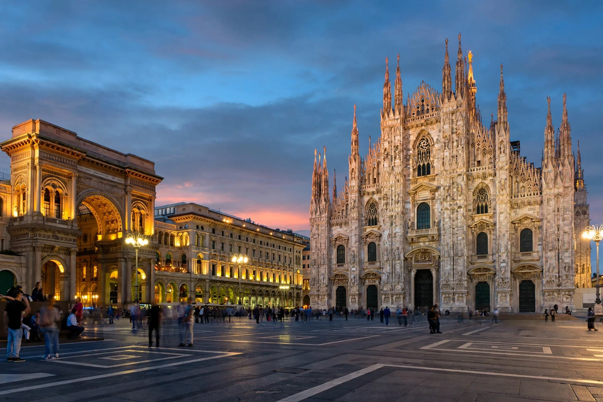

Milan

| Country | Italy |
|---|---|
| Region | Lombardy (capital) |
| Population | ~1.4 million (city); over 5 million (metro) |
| Founded | c. 600 BC (as Mediolanum) |
| Known for | Fashion, finance, design, the Duomo |
Milan (Italian: Milano) is a city in northern Italy, capital of Lombardy, and the second-most-populous city in Italy after Rome, with about 1.4 million residents in the city proper and over 5 million in its metropolitan area. It is Italy's financial and industrial centre and a global capital of fashion and design.
History
Founded by Celtic tribes around 600 BC and conquered by Rome in 222 BC, Mediolanum became one of the capitals of the Western Roman Empire; the Edict of Milan (313 AD), issued by Constantine, granted tolerance to Christianity. In the Renaissance, under the Visconti and Sforza dynasties, Milan flourished as a centre of art and banking — Leonardo da Vinci spent his most productive years at the Sforza court, where he painted The Last Supper (in the refectory of Santa Maria delle Grazie). The city later passed under Spanish, Austrian and French rule before Italian unification in 1859–61.
Landmarks
The Duomo, Milan's vast Gothic cathedral, took nearly six centuries to complete and is among the largest churches in the world. Beside it stands the Galleria Vittorio Emanuele II (1865–77), one of the world's oldest shopping arcades. Other landmarks include the Sforza Castle, La Scala opera house (opened 1778), and the Brera gallery.
Economy and sport
Milan hosts the Italian stock exchange (Borsa Italiana), major banks, and the headquarters of fashion houses including Prada, Armani, Versace and Valentino; Milan Fashion Week is one of the "big four". The Salone del Mobile is the world's largest furniture fair. The city hosted Expo 2015 and, with Cortina d'Ampezzo, the 2026 Winter Olympics. Its two football clubs, AC Milan and Inter Milan, share the San Siro stadium and have each won multiple European Cups.